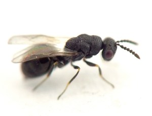
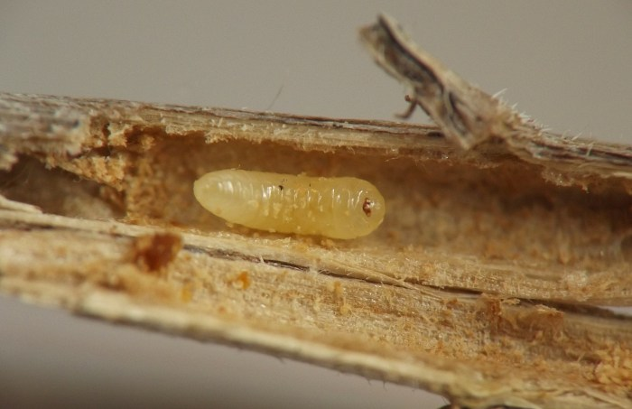
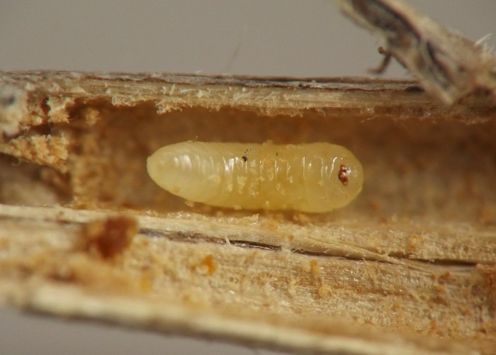
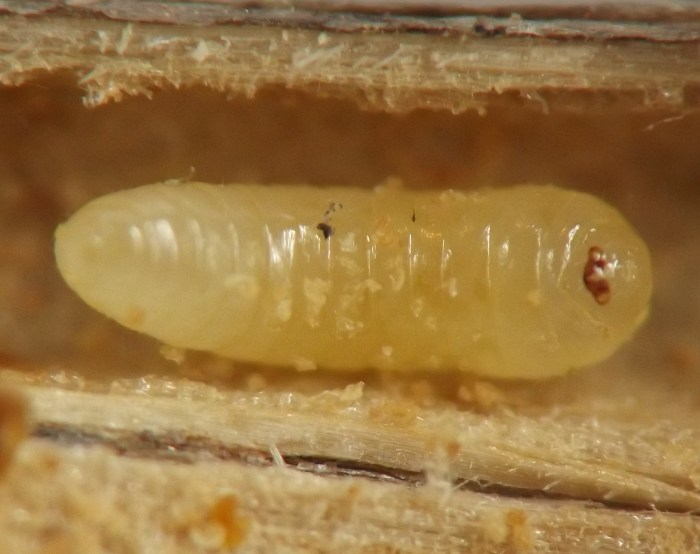
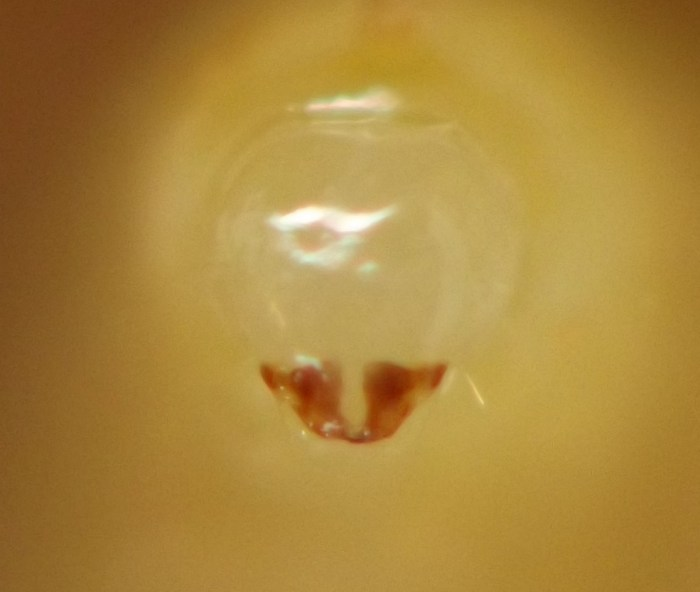
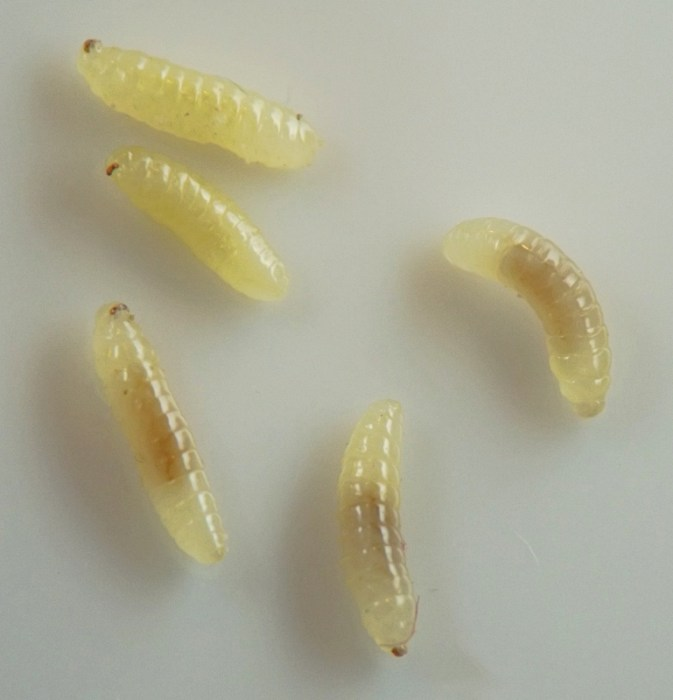
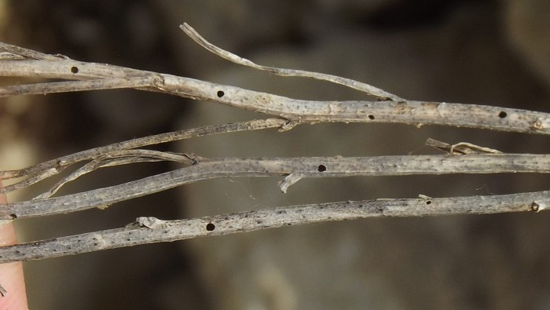
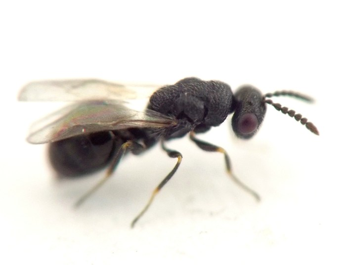
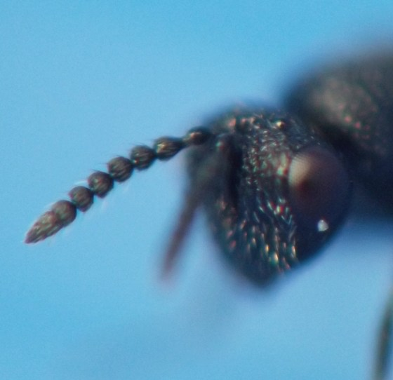

Local feeder (Hymenoptera: Eurytomidae) in stems of Campanula
| Record no.: | 0115 |
|---|---|
| Feeding guild: | Local feeder in stem |
| Taxonomy: | Hymenoptera: Eurytomidae: cf. Eurytoma sp. |
| Stages observed: | trace, larva, adult |
| Hosts in Campanula: | C. rotundifolia (harebell) |

I found wasp larvae overwintering in dead stems of the host in December 2020. There was no clear external sign of the wasps' presence in the dead stems.
A typical affected stem contained several larvae lined up end-to-end in the hollow stem interior; between some of the larvae, there seemed to be partitions of unidentified material. Two of the examined stems were occupied by larvae from the base of the stem almost all the way up to the top.
I reared adults in April 2021 from the overwintered larvae. Additional stems located in the field in late May 2021 bore numerous neatly round exit holes, indicating successful emergence of the adult wasps sometime within the preceding several weeks.
One of the adults reared in 2021 was identified from photos as Eurytomidae by Hill (2021), and most of the other reared adults appeared superficially similar to this one. The family Eurytomidae contains species with a wide range of feeding strategies, including but not limited to phytophagy and entomophagy (Noyes 2004), and it was unclear which feeding strategies the adults from the 2021 rearing had practiced as larvae.
However, it seems likely a phytophagous eurytomid is involved here when one considers the similarities with a European species, Eurytoma campanulae, which has been reared from unblemished stems of Campanula and determined to be a plant feeder. Zerova and Klymenko (2017) reported that "the species [Eurytoma] hypochoeridis (Fig. 2.1; 2.2) was bred by us from the stems of several species of [bellflowers] (Campanula) inhabited by larvae of the herbivorous eurytoma - Eurytoma campanulae Zerova. ... [G]alls do not form on the stem at the feeding site [of the] E. campanulae larvae and the infected stem does not differ in appearance from a healthy stem" (p. 16, translated).
This was precisely the situation from which I reared the adults from Campanula in my study area. Furthermore, affected stems I scrutinized contained wasp larvae only, and if the wasps were all parasitoids of a stem feeder from a different order such as a cecidomyiid, there should have been evidence of a non-wasp host insect in at least one of the stems.
Eventual examination of reared adults by a specialist should help reveal how closely related this local feeder may or may not be to E. campanulae and/or E. hypochoeridis.

 Prev
Prev
{kind=link}
{kind=link}

{kind=link}

{kind=link}

{kind=link}

{kind=link}

{kind=link}

{kind=link}

Coll. 12/07/20 (larvae: 01-03, 05, 09); field photo on 05/24/21 (holes in spent stems: 04); coll. 12/07/20, adults em. by 04/25/21, photos of adult on 04/25/21 (06, 08).
- Hill, R. 2021. Comment on contributor page at BugGuide.net. Retrieved November 23, 2023 from https://bugguide.net/node/view/1960649.[return to in-text citation]
- Noyes, J.S. 2004. Notes on families: Eurytomidae. In Universal Chalcidoidea Database. World Wide Web electronic publication. Retrieved November 23, 2023 from https://www.nhm.ac.uk/our-science/data/chalcidoids/eurytomidae.html.[return to in-text citation]
- Zerova, M. and S.I. Klymenko. 2017. New records about morphology and trophic associations of Eurytoma hypochoeridis (Hymenoptera, Chalcidoidea, Eurytomidae). Збірник праць Зоологічного музею [Zb. prac’ Zool. muz. (Kiïv)], 48: 13–18, 2017. [Note: the containing publication appears to be an annual proceedings from a zoological museum associated with the Ukrainian National Academy of Science's National Museum of Natural History in Kyiv. The paper was obtained from ResearchGate on November 23, 2023 and roughly translated using translation software.][return to in-text citation]
Page created: November 22, 2023. Last update: February 11, 2026